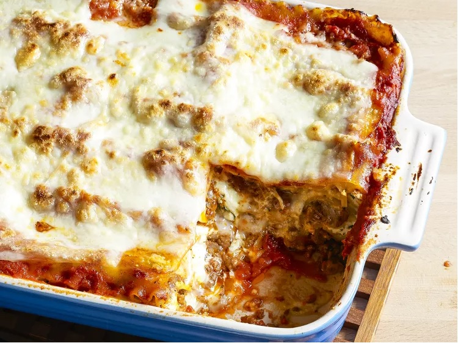

Lasagna

Description
When John Chandler submitted this lasagna recipe to Allrecipes more than 20 years ago, he had no idea how successful it would become. One of our top-performing recipes of all time, World's Best Lasagna racks up more than 7 million views per year and has ranked among the most popular lasagna recipes on the internet for two decades. Unfortunately, John unexpectedly passed away at 53 years old — read all about his life and legacy here.
Make our most popular lasagna today to find out what all the fuss is about!
Ingredients
- Meat: This super meaty lasagna has sweet Italian sausage and lean ground beef.
- Onion and garlic: An onion and two cloves of garlic are cooked with the meat to add tons of flavor.
- Sugar: Two tablespoons of white sugar add subtle sweetness and enhance the flavor of the sauce.
- Spices and seasonings: This lasagna recipe is flavored with fresh parsley, dried basil leaves, salt, Italian seasoning, fennel seeds, and black pepper.
- Lasagna noodles: Use store-bought or homemade lasagna noodles.
- Cheeses: Parmesan, mozzarella, and ricotta cheese make this lasagna extra decadent.
- Egg: An egg helps bind the ricotta so it doesn't ooze out of the lasagna when you cut into it.
Steps
- Make the meat sauce.
- Cook the noodles.
- Make the ricotta mixture.
- Layer the lasagna according to the recipe instructions.
- Cover with foil and bake.
- Let the lasagna rest before serving.
Tuna pasta bake

Description
This tuna pasta bake is a great midweek dinner option that's easy to make yet oh-so flavorsome, creamy, and delicious. Add veggies like peas, baby spinach, or sautéed mushrooms, if you like.
Ingredients
- 1 (14.6 ounce) package penne pasta
- 1 tablespoon olive oil
- 1 tablespoon butter
- 1 onion, chopped
- 3 (5 ounce) cans tuna, drained and flaked
- 1 cup heavy whipping cream
- ½ teaspoon ground nutmeg
- salt and ground black pepper to taste
- 1 ¼ cups grated Parmesan cheese
Steps
- Preheat the oven to 350 degrees F (175 degrees C). Grease an oven-proof baking dish.
- Bring a large pot of lightly salted water to a boil. Add penne and cook, stirring occasionally, until tender yet firm to the bite, about 11 minutes. Drain and toss pasta with olive oil.
- While pasta is cooking, melt butter in a large saucepan over medium heat. Add onion and cook, stirring frequently, until soft and translucent, about 5 minutes. Add tuna and cook for 2 minutes. Pour in heavy cream; season with nutmeg, salt, and pepper. Add penne and toss well. Transfer to the prepared baking dish and cover with Parmesan cheese.
- Bake in the preheated oven until the top is golden brown, 15 to 20 minutes.
Mac N Cheese baby!

Description
This mac and cheese recipe with a buttered bread crumb topping is creamy and comforting. It's easy to make the cheese sauce from scratch on your stovetop, starting with a roux and adding milk, Cheddar, and Parmesan, resulting in a rich, decadent sauce that coats every nook and cranny of the noodles.
Ingredients
- Macaroni: This homemade mac and cheese starts with a box of uncooked macaroni noodles.
- Butter and flour: You'll need butter and flour to make a roux for the cheese sauce. You'll also need two tablespoons of butter for the topping.
- Milk: Use whole milk for the richest flavor and texture.
- Cheese: This baked mac and cheese recipe calls for Cheddar and Parmesan cheeses.
- Seasonings: Salt and pepper goes into the sauce, while paprika is sprinkled over the topping.
- Bread crumbs: Use store-bought dried bread crumbs or make your own at home.
Steps
- Boil the noodles, drain, and transfer to a prepared baking dish.
- Make the cheese sauce, pour the sauce over the noodles, and stir.
- Make the topping, spread it over macaroni and cheese, and sprinkle with paprika.
- Bake the mac and cheese until the topping is golden brown.